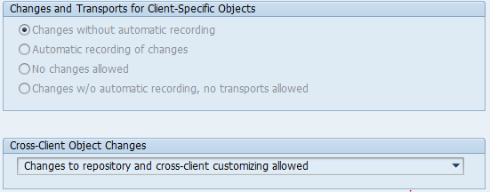
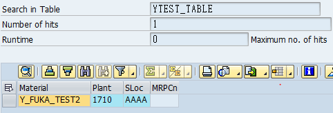
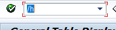
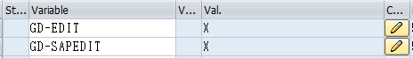
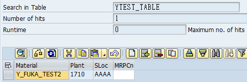

When your client is admistered, basis team will configure whether users are allowed to edit cross-client and client-specific objects. If the changesd are set as allowed, you can edit the customize tables and your custome tables.  However, in the production system, the parameters are usually set as "No changes allowed". You almost never edit your customize tables in the production system because in order to keep your table data compatibile with your quality assurance client and development client, you usually transport the changes from DEV system->QAS system->PRD system. But custom transactional tables doesn't necessary be compatible with other instances. In some occasions you need to make changes to your custom transactional tables in the production system despite being prohibited by the setting in SCC4. In order to do this, I will demonstarate a loophole to resolve this. Steps We have a custom table that is not allowed to edit.  Go to se16n/se16h, set the table you want to edit, enter "/h" in the command filed and execute.  In the variable parameterS, enter "GD-EDIT" and "GD-SAPEDIT" and set their values to X. Perss F8 to execute.  As easy as that, the table data is editable. Key fields are not editable so you need to delete and insert new rows.  Even though this is a quick solution, there is one thing to note. You should never use this to standard/customize tables because it will cause incompatibility with other related tables.